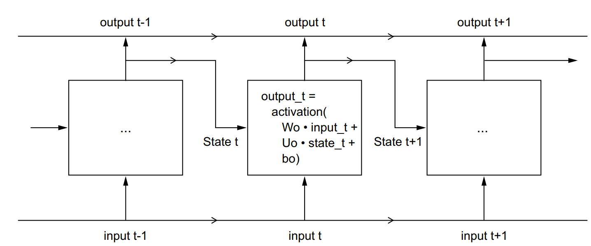
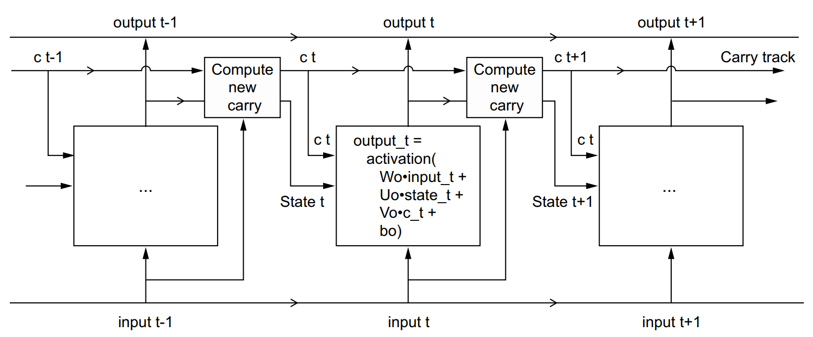

4. Chuỗi thời gian#
4.1. Giới thiệu#
Khi dự báo với deep learning, ta có thể chia dữ liệu thành các minibatch khác nhau. Với mỗi sequence_length là m, sẽ lấy m điểm thời gian trước đó để làm input dự báo cho thời gian hiện tại
import numpy as np
from tensorflow import keras
int_sequence = np.arange(10)
dummy_dataset = keras.utils.timeseries_dataset_from_array(
data=int_sequence[:-3],
targets=int_sequence[3:],
sequence_length=3,
batch_size=2,
)
for inputs, targets in dummy_dataset:
for i in range(inputs.shape[0]):
print([int(x) for x in inputs[i]], int(targets[i]))
[0, 1, 2] 3
[1, 2, 3] 4
[2, 3, 4] 5
[3, 4, 5] 6
[4, 5, 6] 7
Với mô hình DL cơ bản, ta có thể sử dụng các dense layer để sử dụng các feature tại n điểm thời gian gần nhất dự báo cho điểm thời gian tiếp theo. Xem ví dụ đơn giản dưới đây
import numpy as np
import tensorflow as tf
from tensorflow import keras
from tensorflow.keras.models import Sequential
from tensorflow.keras.layers import Dense
import polars as pl
from lets_plot import *
LetsPlot.setup_html()
# Set a seed for reproducibility
np.random.seed(42)
tf.random.set_seed(42)
# --- 1. Generate Synthetic Data with Multiple Features ---
# We'll create a primary time series and five additional features that are
# correlated with the main series.
def generate_time_series_with_features(num_points=1000, noise_level=0.1):
"""
Generates a synthetic time series as a Polars DataFrame with multiple features.
"""
time = np.arange(num_points)
# Primary time series
series_values = np.sin(0.1 * time) + np.random.uniform(-noise_level, noise_level, num_points)
# Generate five additional correlated features
df = pl.DataFrame({
"time": time,
"value": series_values,
"x1": series_values * 0.5 + np.random.uniform(-noise_level, noise_level, num_points),
"x2": np.cos(0.15 * time) + np.random.uniform(-noise_level, noise_level, num_points),
"x3": series_values + np.random.uniform(-noise_level, noise_level, num_points),
"x4": -np.sin(0.08 * time) + np.random.uniform(-noise_level, noise_level, num_points),
"x5": np.cos(0.2 * time) - series_values * 0.5 + np.random.uniform(-noise_level, noise_level, num_points)
})
return df
data_df = generate_time_series_with_features()
print(f"Generated a Polars DataFrame with {data_df.shape[0]} data points and multiple features.")
data_df.head()
Generated a Polars DataFrame with 1000 data points and multiple features.
| time | value | x1 | x2 | x3 | x4 | x5 |
|---|---|---|---|---|---|---|
| i64 | f64 | f64 | f64 | f64 | f64 | f64 |
| 0 | -0.025092 | -0.075519 | 0.952341 | 0.009449 | 0.014399 | 0.991273 |
| 1 | 0.189976 | 0.103368 | 0.938167 | 0.249313 | -0.018828 | 0.879766 |
| 2 | 0.245068 | 0.197123 | 1.036587 | 0.195162 | -0.107286 | 0.869436 |
| 3 | 0.315252 | 0.204071 | 0.850356 | 0.340227 | -0.306923 | 0.635711 |
| 4 | 0.320622 | 0.221623 | 0.779726 | 0.334971 | -0.384717 | 0.610326 |
(
ggplot(data_df, aes("time", "value"))
+ geom_line()
)
# --- 2. Tao tập dữ liệu phục vụ cho dự báo với x steps
def create_dataset_with_features(dataframe, feature_columns, target_column, n_steps_in, n_steps_out):
"""
Converts a time series stored in a Polars DataFrame into a
supervised learning dataset for multi-variate, multi-step forecasting.
Args:
dataframe (pl.DataFrame): The input time series data.
feature_columns (list): The names of the columns to use as input features.
target_column (str): The name of the column containing the target values (Y).
n_steps_in (int): The number of past time steps to use as input (the window size).
n_steps_out (int): The number of future time steps to predict.
Returns:
tuple: A tuple of (X, y) where X are the input sequences
and y are the target sequences, both as NumPy arrays.
"""
# Extract features and target into a single NumPy array
features = dataframe.select(feature_columns).to_numpy()
target = dataframe.select(target_column).to_numpy().flatten()
X, y = [], []
for i in range(len(features) - n_steps_in - n_steps_out + 1):
# The input is the window of n_steps_in for all features
X_input = features[i:i + n_steps_in, :]
X.append(X_input.flatten()) # Flatten the 2D input window to a 1D vector
# The output is the sequence of n_steps_out future target values
y.append(target[i + n_steps_in : i + n_steps_in + n_steps_out])
return np.array(X), np.array(y)
# Define the features and target
feature_cols = ["x1", "x2", "x3", "x4", "x5"]
target_col = "value"
# We'll use the last 10 data points to predict the next 5.
n_steps_in = 10
n_steps_out = 5
X, y = create_dataset_with_features(data_df, feature_cols, target_col, n_steps_in, n_steps_out)
# Determine the number of features for the model input shape
n_features = len(feature_cols)
# Split the data into training and testing sets
train_size = int(len(X) * 0.8)
X_train, y_train = X[:train_size], y[:train_size]
X_test, y_test = X[train_size:], y[train_size:]
print(f"Dataset prepared with {X_train.shape[0]} training examples and {X_test.shape[0]} test examples.")
print(f"Dataset prepared with {y_train.shape[0]} training examples and {y_test.shape[0]} test examples.")
print(f"Each input example has {X_train.shape[1]} features ({n_steps_in} steps * {n_features} features).")
# --- 3. Build the Keras Model ---
# The input layer now expects a flattened vector of all features and all time steps.
model = Sequential([
Dense(50, activation='relu', input_shape=(n_steps_in * n_features,)),
Dense(50, activation='relu'),
Dense(n_steps_out) # The output layer has `n_steps_out` neurons
])
# --- 4. Compile the Model ---
model.compile(optimizer='adam', loss='mean_squared_error')
Dataset prepared with 788 training examples and 198 test examples.
Dataset prepared with 788 training examples and 198 test examples.
Each input example has 50 features (10 steps * 5 features).
C:\Users\Admin\AppData\Local\Programs\Python\Python311\Lib\site-packages\keras\src\layers\core\dense.py:93: UserWarning: Do not pass an `input_shape`/`input_dim` argument to a layer. When using Sequential models, prefer using an `Input(shape)` object as the first layer in the model instead.
super().__init__(activity_regularizer=activity_regularizer, **kwargs)
# Print a summary of the model architecture
model.summary()
Model: "sequential"
┌─────────────────────────────────┬────────────────────────┬───────────────┐
│ Layer (type) │ Output Shape │ Param # │
├─────────────────────────────────┼────────────────────────┼───────────────┤
│ dense (Dense) │ (None, 50) │ 2,550 │
├─────────────────────────────────┼────────────────────────┼───────────────┤
│ dense_1 (Dense) │ (None, 50) │ 2,550 │
├─────────────────────────────────┼────────────────────────┼───────────────┤
│ dense_2 (Dense) │ (None, 5) │ 255 │
└─────────────────────────────────┴────────────────────────┴───────────────┘
Total params: 5,355 (20.92 KB)
Trainable params: 5,355 (20.92 KB)
Non-trainable params: 0 (0.00 B)
# --- 5. Train the Model ---
history = model.fit(X_train, y_train, epochs=20, verbose=1, validation_split=0.2)
Epoch 1/20
20/20 ━━━━━━━━━━━━━━━━━━━━ 2s 17ms/step - loss: 0.4680 - val_loss: 0.2384
Epoch 2/20
20/20 ━━━━━━━━━━━━━━━━━━━━ 0s 6ms/step - loss: 0.2117 - val_loss: 0.1195
Epoch 3/20
20/20 ━━━━━━━━━━━━━━━━━━━━ 0s 6ms/step - loss: 0.1109 - val_loss: 0.0527
Epoch 4/20
20/20 ━━━━━━━━━━━━━━━━━━━━ 0s 7ms/step - loss: 0.0429 - val_loss: 0.0205
Epoch 5/20
20/20 ━━━━━━━━━━━━━━━━━━━━ 0s 6ms/step - loss: 0.0178 - val_loss: 0.0131
Epoch 6/20
20/20 ━━━━━━━━━━━━━━━━━━━━ 0s 6ms/step - loss: 0.0120 - val_loss: 0.0106
Epoch 7/20
20/20 ━━━━━━━━━━━━━━━━━━━━ 0s 8ms/step - loss: 0.0099 - val_loss: 0.0095
Epoch 8/20
20/20 ━━━━━━━━━━━━━━━━━━━━ 0s 6ms/step - loss: 0.0088 - val_loss: 0.0089
Epoch 9/20
20/20 ━━━━━━━━━━━━━━━━━━━━ 0s 6ms/step - loss: 0.0080 - val_loss: 0.0086
Epoch 10/20
20/20 ━━━━━━━━━━━━━━━━━━━━ 0s 8ms/step - loss: 0.0075 - val_loss: 0.0083
Epoch 11/20
20/20 ━━━━━━━━━━━━━━━━━━━━ 0s 7ms/step - loss: 0.0072 - val_loss: 0.0082
Epoch 12/20
20/20 ━━━━━━━━━━━━━━━━━━━━ 0s 7ms/step - loss: 0.0069 - val_loss: 0.0080
Epoch 13/20
20/20 ━━━━━━━━━━━━━━━━━━━━ 0s 6ms/step - loss: 0.0066 - val_loss: 0.0080
Epoch 14/20
20/20 ━━━━━━━━━━━━━━━━━━━━ 0s 7ms/step - loss: 0.0064 - val_loss: 0.0079
Epoch 15/20
20/20 ━━━━━━━━━━━━━━━━━━━━ 0s 8ms/step - loss: 0.0062 - val_loss: 0.0079
Epoch 16/20
20/20 ━━━━━━━━━━━━━━━━━━━━ 0s 8ms/step - loss: 0.0060 - val_loss: 0.0078
Epoch 17/20
20/20 ━━━━━━━━━━━━━━━━━━━━ 0s 7ms/step - loss: 0.0059 - val_loss: 0.0078
Epoch 18/20
20/20 ━━━━━━━━━━━━━━━━━━━━ 0s 7ms/step - loss: 0.0058 - val_loss: 0.0077
Epoch 19/20
20/20 ━━━━━━━━━━━━━━━━━━━━ 0s 7ms/step - loss: 0.0056 - val_loss: 0.0077
Epoch 20/20
20/20 ━━━━━━━━━━━━━━━━━━━━ 0s 6ms/step - loss: 0.0055 - val_loss: 0.0076
# --- 6. Dự báo trên tập test & đánh giá chất lượng mô hình ---
predictions = model.predict(X_test)
mae = np.mean(np.abs(predictions.flatten() - y_test.flatten()))
print(f"\nMean Absolute Error on the test set for all predictions: {mae:.4f}")
7/7 ━━━━━━━━━━━━━━━━━━━━ 0s 11ms/step
Mean Absolute Error on the test set for all predictions: 0.0702
# Dự báo với các điểm dữ liệu
last_window = data_df.select(feature_cols).tail(n_steps_in).to_numpy()
input_for_prediction = last_window.flatten().reshape(1, -1)
next_values_prediction = model.predict(input_for_prediction)
print("\nPrediction for the next 5 values in the series:")
for i, pred in enumerate(next_values_prediction[0]):
print(f" Step {i+1}: {pred:.4f}")
1/1 ━━━━━━━━━━━━━━━━━━━━ 0s 49ms/step
Prediction for the next 5 values in the series:
Step 1: -0.5801
Step 2: -0.4782
Step 3: -0.3557
Step 4: -0.3337
Step 5: -0.1604
4.2. Recurrent Neural Network#
Với ví dụ đơn giản trên, để dự báo các biến tiếp theo, ta cần duỗi tất cả các biến đầu vào và xây dựng mô hình cho tất cả tập dữ liệu cùng một lúc. Nhóm mô hình trên còn gọi là feedforward neural network. Trong thực tế, với một số bài toán dự báo, 1 yếu tố mới đầu ra sẽ không chỉ phụ thuộc dữ liệu đầu vào mà toàn bộ các thông tin dữ liệu lịch sử (ký ức) như dự báo ECG, dịch thuật. Trong kiểu mô hình trên, ta không cho phép mô hình học tuần tự theo chu kỳ thời gian.
Để khắc phục nhược điểm trên, người ta xây dựng thêm mô hình Recurrent Neural Network. Mô hình này dựa trên ý tưởng kết quả dự báo không chỉ dựa trên thông tin mới mà còn dựa vào các thông tin đã được dự báo và lưu trữ từ quá khứ. Như vậy, mô hình có trí nhớ với khả năng lưu trữ các thông tin cũ từ quá khứ.
Thay vì chỉ nhận dữ liệu đầu vào \(x_t\), RNN sẽ nhận cả các trạng thái ẩn (hidden state) \(h_{t-1}\) từ thời điểm trước đó. Như vậy, ta có thể coi \(h_{t-1}\) như một bộ nhớ lưu trữ các thông tin từ quá khứ.
Trong đó:
\(h_t\): Trạng thái ẩn tại thời điểm \(t\)
\(x_t\): Đầu vào tại thời điểm \(t\)
\(y_t\): Output
\(f, g\): Hàm kích hoạt (activation function) như
tanh,relu,sigmoid
# Pseudo code
state_t = 0
for input_t in input_sequence:
output_t = f(input_t, state_t)
state_t = output_t
# Detail implementation
state_t = 0
for input_t in input_sequence:
output_t = activation(dot(W, input_t) + dot(U, state_t) + b)
state_t = output_t

Trực quan hóa: Giả sử ta đang dự đoán một câu tiếng Việt. Câu bắt đầu với cụm từ
“Hôm nay trời rất…”
Đến đây ta có thể dự đoán từ tiếp theo → có thể là “đẹp”, “nắng”, “lạnh”…
Dự đoán phụ thuộc vào tất cả từ trước đó.
RNN giống như một “bộ nhớ tạm thời” để lưu lại ngữ cảnh trước khi sinh tiếp từ sau.
4.3. Long Short Term Memory#
4.3.1. Giới thiệu#
Về mặt lý thuyết, RNN có khả năng lưu trữ trí nhớ tại các state. Tuy nhiên, khi chuỗi thời gian đủ lớn, mô hình sẽ không có khả năng ghi nhớ các trạng thái ẩn ở lâu trước đó. Do đó, RNN chỉ có thể có trí nhớ ngắn hạn. Để giải quyết nhược điểm đó, người ta phát triển thêm mô hình LSTM - Long Short Term Memory, cho phép mô hình Neural Network có thể ghi nhớ các trạng thái dài hạn.
Ý tưởng chính của LSTM là để tạo ra và cho phép ghi nhớ ký ức được tốt hơn. Thay vì chỉ có 1 trạng thái ẩn, LSTM cho phép tạo ra các cell state (bộ nhớ dài hạn). Thông tin trong bộ nhơ dài hạn được quyết định và điều chỉnh từ các cổng (gates). Các cổng này cho phép mô hình quyết định giữ lại, quên đi hoặc bổ sung các thông tin mới.

Với mô hình LSTM, mạng neural sẽ mang theo thông tin C & được tính toán, điều chỉnh 1 chút theo thời gian.
# Pseudo code
output_t = activation(dot(state_t, Uo) + dot(input_t, Wo) + dot(c_t, Vo) + bo)
i_t = activation(dot(state_t, Ui) + dot(input_t, Wi) + bi)
f_t = activation(dot(state_t, Uf) + dot(input_t, Wf) + bf)
k_t = activation(dot(state_t, Uk) + dot(input_t, Wk) + bk)
# Trong đó
c_t+1 = i_t * k_t + c_t * f_t
Trực quan hóa: RNN có thể coi như người có trí nhớ ngắn hạn nhưng khi câu chuyện dài quá sẽ quên mất các nội dung chính. LSTM giống như người có trí nhớ dài hạn tốt để có thể tập trung vào trọng tâm.
Quay trở lại ví dụ dự đoán câu tiếng Việt. Giả sử ta có câu:"Hôm nay trời rất đẹp, tôi đi dạo công viên..."
Trong LSTM, mô hình sẽ cập nhật thông qua 3 cánh cửa:
Forget gate: Quên đi các thông tin không cần thiết như "hôm nay"
Input gate: Bổ sung các thông tin mới như "đẹp" hay "công viên"
Output gate: Quyết định thông tin nào sẽ được đưa vào trạng thái ẩn để dự đoán từ tiếp theo.
4.3.2. Ví dụ mô hình#
Với mô hình đã xây dựng với Dense Layer, ta có thể xây dựng mô hình LSTM như sau
import numpy as np
import tensorflow as tf
from tensorflow import keras
from tensorflow.keras.models import Sequential
from tensorflow.keras.layers import Dense, LSTM
import polars as pl
# Set a seed for reproducibility
np.random.seed(42)
tf.random.set_seed(42)
# --- 1. Generate Synthetic Data with Multiple Features ---
# We'll create a primary time series and five additional features that are
# correlated with the main series.
def generate_time_series_with_features(num_points=1000, noise_level=0.1):
"""
Generates a synthetic time series as a Polars DataFrame with multiple features.
"""
time = np.arange(num_points)
# Primary time series
series_values = np.sin(0.1 * time) + np.random.uniform(-noise_level, noise_level, num_points)
# Generate five additional correlated features
df = pl.DataFrame({
"time": time,
"value": series_values,
"x1": series_values * 0.5 + np.random.uniform(-noise_level, noise_level, num_points),
"x2": np.cos(0.15 * time) + np.random.uniform(-noise_level, noise_level, num_points),
"x3": series_values + np.random.uniform(-noise_level, noise_level, num_points),
"x4": -np.sin(0.08 * time) + np.random.uniform(-noise_level, noise_level, num_points),
"x5": np.cos(0.2 * time) - series_values * 0.5 + np.random.uniform(-noise_level, noise_level, num_points)
})
return df
data_df = generate_time_series_with_features()
print(f"Generated a Polars DataFrame with {data_df.shape[0]} data points and multiple features.")
# --- 2. Prepare Data for Supervised Learning with Multiple Features ---
# We'll create a dataset where the model learns to predict the next `n_steps_out` values
# of the primary time series based on a fixed window of all features.
def create_dataset_with_features(dataframe, feature_columns, target_column, n_steps_in, n_steps_out):
"""
Converts a time series stored in a Polars DataFrame into a
supervised learning dataset for multi-variate, multi-step forecasting.
Args:
dataframe (pl.DataFrame): The input time series data.
feature_columns (list): The names of the columns to use as input features.
target_column (str): The name of the column containing the target values (Y).
n_steps_in (int): The number of past time steps to use as input (the window size).
n_steps_out (int): The number of future time steps to predict.
Returns:
tuple: A tuple of (X, y) where X are the input sequences
and y are the target sequences, both as NumPy arrays.
"""
# Extract features and target into a single NumPy array
features = dataframe.select(feature_columns).to_numpy()
target = dataframe.select(target_column).to_numpy().flatten()
X, y = [], []
for i in range(len(features) - n_steps_in - n_steps_out + 1):
# The input is the window of n_steps_in for all features
X_input = features[i:i + n_steps_in, :]
X.append(X_input) # We now append the 2D window directly
# The output is the sequence of n_steps_out future target values
y.append(target[i + n_steps_in : i + n_steps_in + n_steps_out])
# LSTM models expect a 3D input: [samples, timesteps, features]
return np.array(X), np.array(y)
# Define the features and target
feature_cols = ["value", "x1", "x2", "x3", "x4", "x5"]
target_col = "value"
# We'll use the last 10 data points to predict the next 5.
n_steps_in = 10
n_steps_out = 5
X, y = create_dataset_with_features(data_df, feature_cols, target_col, n_steps_in, n_steps_out)
# Determine the number of features for the model input shape
n_features = len(feature_cols)
# Split the data into training and testing sets
train_size = int(len(X) * 0.8)
X_train, y_train = X[:train_size], y[:train_size]
X_test, y_test = X[train_size:], y[train_size:] # Fixed the bug here
print(f"Dataset prepared with {X_train.shape[0]} training examples and {X_test.shape[0]} test examples.")
print(f"Each input example has shape: {X_train.shape[1:]}.")
Generated a Polars DataFrame with 1000 data points and multiple features.
Dataset prepared with 788 training examples and 198 test examples.
Each input example has shape: (10, 6).
# --- 3. Build the Keras Model with LSTM ---
# The LSTM layer expects a 3D input: [samples, timesteps, features]
model = Sequential([
# The LSTM layer processes the sequence data
LSTM(50, activation='relu', input_shape=(n_steps_in, n_features)),
# The final dense layer predicts the n_steps_out values
Dense(n_steps_out)
])
# --- 4. Compile the Model ---
model.compile(optimizer='adam', loss='mean_squared_error')
# Print a summary of the model architecture
model.summary()
Model: "sequential_1"
┌─────────────────────────────────┬────────────────────────┬───────────────┐
│ Layer (type) │ Output Shape │ Param # │
├─────────────────────────────────┼────────────────────────┼───────────────┤
│ lstm (LSTM) │ (None, 50) │ 11,400 │
├─────────────────────────────────┼────────────────────────┼───────────────┤
│ dense_3 (Dense) │ (None, 5) │ 255 │
└─────────────────────────────────┴────────────────────────┴───────────────┘
Total params: 11,655 (45.53 KB)
Trainable params: 11,655 (45.53 KB)
Non-trainable params: 0 (0.00 B)
C:\Users\Admin\AppData\Local\Programs\Python\Python311\Lib\site-packages\keras\src\layers\rnn\rnn.py:199: UserWarning: Do not pass an `input_shape`/`input_dim` argument to a layer. When using Sequential models, prefer using an `Input(shape)` object as the first layer in the model instead.
super().__init__(**kwargs)
# --- 5. Train the Model ---
history = model.fit(X_train, y_train, epochs=20, verbose=1, validation_split=0.2)
Epoch 1/20
20/20 ━━━━━━━━━━━━━━━━━━━━ 2s 23ms/step - loss: 0.5300 - val_loss: 0.3779
Epoch 2/20
20/20 ━━━━━━━━━━━━━━━━━━━━ 0s 9ms/step - loss: 0.3014 - val_loss: 0.2145
Epoch 3/20
20/20 ━━━━━━━━━━━━━━━━━━━━ 0s 11ms/step - loss: 0.1882 - val_loss: 0.1398
Epoch 4/20
20/20 ━━━━━━━━━━━━━━━━━━━━ 0s 10ms/step - loss: 0.1298 - val_loss: 0.0666
Epoch 5/20
20/20 ━━━━━━━━━━━━━━━━━━━━ 0s 8ms/step - loss: 0.0660 - val_loss: 0.0345
Epoch 6/20
20/20 ━━━━━━━━━━━━━━━━━━━━ 0s 8ms/step - loss: 0.0320 - val_loss: 0.0183
Epoch 7/20
20/20 ━━━━━━━━━━━━━━━━━━━━ 0s 9ms/step - loss: 0.0165 - val_loss: 0.0108
Epoch 8/20
20/20 ━━━━━━━━━━━━━━━━━━━━ 0s 11ms/step - loss: 0.0109 - val_loss: 0.0088
Epoch 9/20
20/20 ━━━━━━━━━━━━━━━━━━━━ 0s 10ms/step - loss: 0.0093 - val_loss: 0.0081
Epoch 10/20
20/20 ━━━━━━━━━━━━━━━━━━━━ 0s 9ms/step - loss: 0.0087 - val_loss: 0.0076
Epoch 11/20
20/20 ━━━━━━━━━━━━━━━━━━━━ 0s 10ms/step - loss: 0.0083 - val_loss: 0.0074
Epoch 12/20
20/20 ━━━━━━━━━━━━━━━━━━━━ 0s 9ms/step - loss: 0.0081 - val_loss: 0.0072
Epoch 13/20
20/20 ━━━━━━━━━━━━━━━━━━━━ 0s 9ms/step - loss: 0.0079 - val_loss: 0.0070
Epoch 14/20
20/20 ━━━━━━━━━━━━━━━━━━━━ 0s 9ms/step - loss: 0.0077 - val_loss: 0.0069
Epoch 15/20
20/20 ━━━━━━━━━━━━━━━━━━━━ 0s 10ms/step - loss: 0.0075 - val_loss: 0.0068
Epoch 16/20
20/20 ━━━━━━━━━━━━━━━━━━━━ 0s 10ms/step - loss: 0.0074 - val_loss: 0.0068
Epoch 17/20
20/20 ━━━━━━━━━━━━━━━━━━━━ 0s 9ms/step - loss: 0.0072 - val_loss: 0.0067
Epoch 18/20
20/20 ━━━━━━━━━━━━━━━━━━━━ 0s 9ms/step - loss: 0.0071 - val_loss: 0.0066
Epoch 19/20
20/20 ━━━━━━━━━━━━━━━━━━━━ 0s 9ms/step - loss: 0.0070 - val_loss: 0.0066
Epoch 20/20
20/20 ━━━━━━━━━━━━━━━━━━━━ 0s 9ms/step - loss: 0.0068 - val_loss: 0.0065
# --- 6. Make a Forecast and Evaluate ---
predictions = model.predict(X_test)
mae = np.mean(np.abs(predictions.flatten() - y_test.flatten()))
print(f"\nMean Absolute Error on the test set for all predictions: {mae:.4f}")
7/7 ━━━━━━━━━━━━━━━━━━━━ 0s 35ms/step
Mean Absolute Error on the test set for all predictions: 0.0667
# You can also make a multi-step forecast on the very last data points
# The input for prediction must have the shape [1, n_steps_in, n_features]
last_window = data_df.select(feature_cols).tail(n_steps_in).to_numpy()
input_for_prediction = last_window.reshape(1, n_steps_in, n_features)
next_values_prediction = model.predict(input_for_prediction)
print("\nPrediction for the next 5 values in the series:")
for i, pred in enumerate(next_values_prediction[0]):
print(f" Step {i+1}: {pred:.4f}")
1/1 ━━━━━━━━━━━━━━━━━━━━ 0s 65ms/step
Prediction for the next 5 values in the series:
Step 1: -0.5511
Step 2: -0.4145
Step 3: -0.3618
Step 4: -0.2764
Step 5: -0.1332